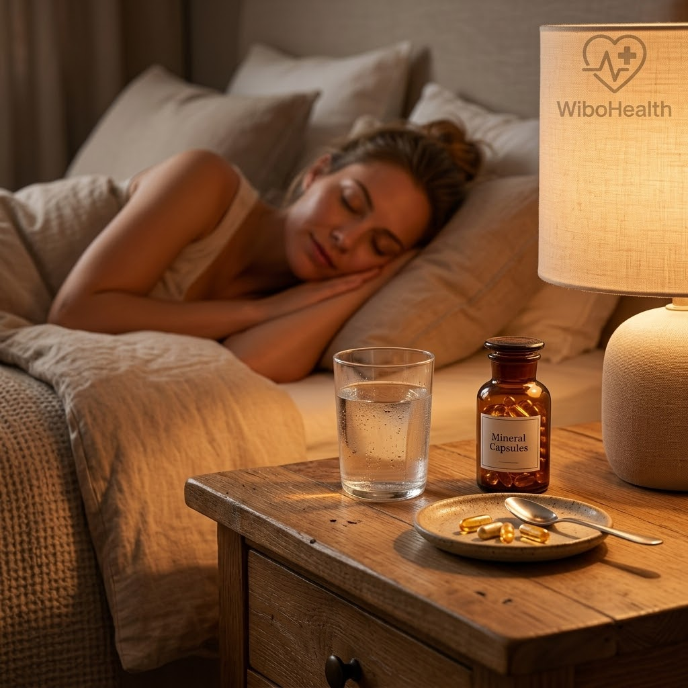
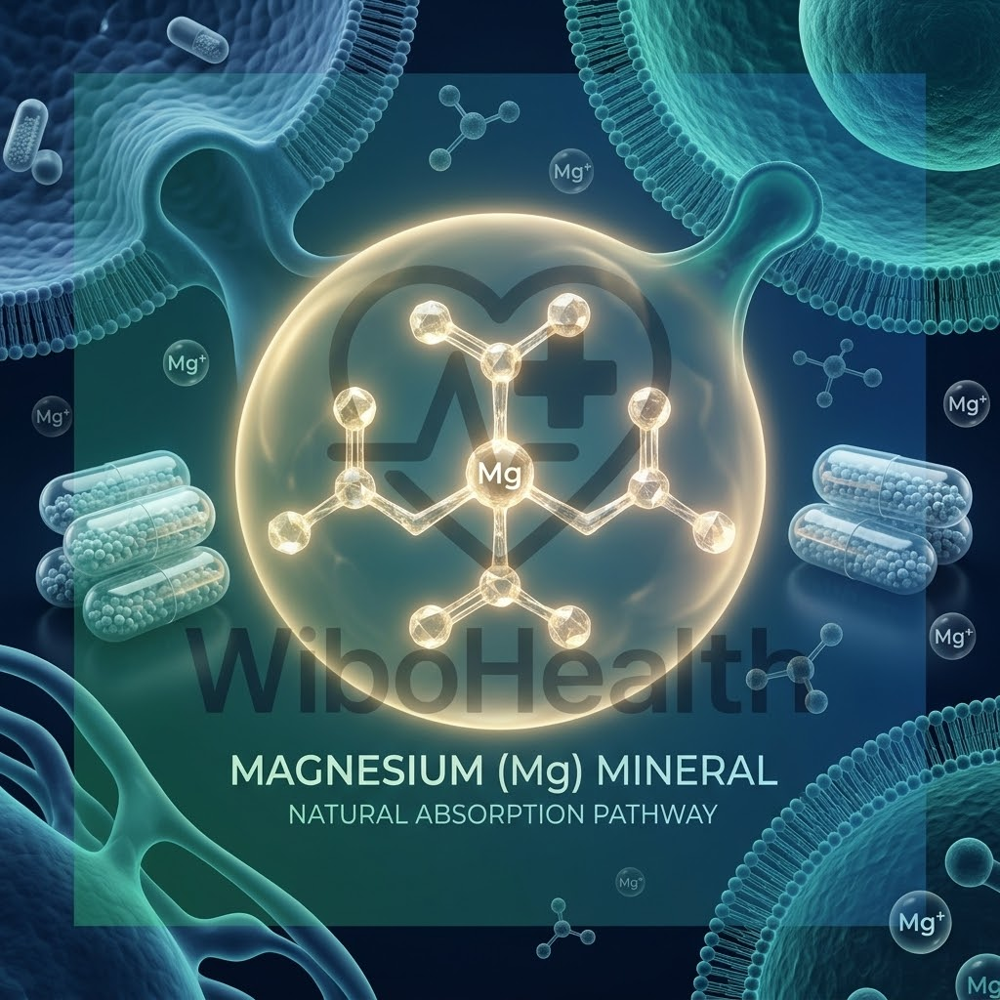

تدخل الصيدلية باحثاً عن علبة مغنيسيوم لأنك تعاني من أرق مزمن أو شد عضلي مؤلم، فتفاجأ بعشرات العلب والأسماء المعقدة: جلايسينات، سترات، مالات، أوكسيد، وتورات! تخرج في حيرة دون أن تعرف أي نوع سيحل مشكلتك حقاً، أو ربما تشتري نوعاً رخيصاً لا يمتصه جسمك بل يسبب لك إسهالاً ومغصاً مزعجاً دون أي فائدة عضلية أو عصبية!
المغنيسيوم ليس مجرد معدن عادي؛ إنه "المايسترو الكيميائي" الذي يشترك في أكثر من 300 تفاعل إنزيمي داخل خلاياك، بدءاً من تصنيع الحمض النووي (DNA)، وضبط ضربات القلب، وتهدئة السيالات العصبية، إلى استرخاء ألياف العضلات. ولكن السر السريري الذي يجهله الكثيرون هو أن المغنيسيوم لا يدخل جسمك وحيداً، بل يرتبط بجزيء ناقل (حمض أميني أو عضوي) يحدد تماماً أين سيذهب المكمل في جسمك، وما هي المشكلة التي سيعالجها.

المغنيسيوم المناسب قبل النوم: مفتاحك السريري لإسكات القلق العصبي والدخول في نوم عميق دون تقطعاحذر فخ "أكسيد المغنيسيوم" (Magnesium Oxide) التجاري:
أكسيد المغنيسيوم هو أرخص نوع تجارياً وأكثره انتشاراً في السوبرماركت والمكملات الرديئة. الحقيقة الصادمة أن معدل امتصاصه في الأمعاء لا يتجاوز 4% فقط! والباقي (96%) يظل في القولون ليسحب الماء ويتحول إلى ملين قوي ومسهل للبطن، دون أن يصل إلى عضلاتك أو دماغك إطلاقاً!
خريطة اختيار المغنيسيوم المناسب لاحتياجك (بدون حيرة)
إليك الدليل السريري المبسط لتختار النوع الذي يحتاجه جسدك بدقة:
مرتبط بالحمض الأميني المهدئ (الجلايسين). يتميز بأعلى معدل امتصاص في الأمعاء وخفته التامة على المعدة. يعبر الحاجز الدموي الدماغي لتهدئة مستقبلات GABA، مما يجعله الخيار رقم 1 للأرق وصعوبة النوم والقلق المزمن.
مرتبط بحمض الماليك الذي يدخل في دورة كريبس لتوليد الطاقة الخلوية (ATP). يذهب مباشرة للألياف العضلية المرهقة، وهو الحل السريري الأفضل لمرضى الفايبروميالجيا، وآلام العضلات المزمنة، والخمول الصباحي.
مرتبط بحمض الستريك. امتصاصه جيد جداً، وله تأثير اسموزي ملين للأمعاء، مما يجعله العلاج المثالي لمن يعانون من تشنجات العضلات المصحوبة بإمساك مزمن وبطء حركة الهضم.
مرتبط بالحمض الأميني (التورين). يعملان بتناغم استثنائي على توسيع الأوعية الدموية، وتنظيم نبضات القلب (خفقان القلب التوتري)، وتحسين حساسية الإنسولين في الأنسجة.

رسم سريري توضيحي: البنية الجزيئية المخلبية لمعدن المغنيسيوم وعلاقتها بنسبة الامتصاص الحيوي في خلايا الجسمعلامات جسدية صامتة تخبرك أنك تعاني من نقص المغنيسيوم
- رجفة ورفة جفن العين المفاجئة (Eye Twitching): إشارة عصبية كلاسيكية لفرط استثارة الأعصاب لنقص المغنيسيوم المنظم للكالسيوم.
- شد عضلات الساق ليلاً (Night Leg Cramps): استيقاظ مفاجئ بألم عضلي حاد في بطة الساق نتيجة فشل الألياف في الاسترخاء.
- خفقان وتسارع نبضات القلب دون سبب قلبي: اضطراب عابر في التوصيل الكهربائي لغرف القلب.
- النوم الخفيف وكثرة التقلب والاستيقاظ المتكرر: عدم قدرة الدماغ على البقاء في موجات دلتا (Delta waves) العميقة.
- الصداع النصفي والتوتر المتكرر: تضيق الشرايين الدماغية بسبب غياب التأثير المرخي للمغنيسيوم.
البروتوكول السريري للجرعات والتوقيت الصحيح لتناول المغنيسيوم
حتى يعطيك المكمل أقصى فائدة، التزم بهذه القواعد الذهبية الثلاث:
1. الجرعة اليومية الفعالة
يحتاج البالغون سريرياً إلى 200 إلى 400 ملغ يومياً من المغنيسيوم الأيوني العنصري (Elemental Magnesium). تأكد دائماً من قراءة الملصق الخلفي ومعرفة وزن المغنيسيوم الصافي وليس وزن مركب المخلب بالكامل.
2. توقيت التناول الذكي
- إذا كان هدفك النوم والراحة العصبية (جلايسينات): تناوله قبل النوم بـ 45 إلى 60 دقيقة.
- إذا كان هدفك طاقة العضلات والنشاط (مالات): تناوله صباحاً مع وجبة الإفطار.
- إذا كان هدفك تنظيم الإخراج وعلاج الإمساك (سترات): تناوله مع كوب ماء كبير مساءً.
3. قاعدة المباعدة مع المكملات الأخرى
لا تتناول المغنيسيوم أبداً في نفس اللحظة مع مكملات الكالسيوم أو الحديد، أو مع أدوية خمول الغدة الدرقية (ليفوثيروكسين)؛ لأنها تتنافس جميعاً على نفس بوابات الامتصاص في الأمعاء. باعد بينها بساعتين على الأقل.
أسئلة شائعة يجيب عنها فريق WiBo Health
للأسف لا! 99% من مغنيسيوم الجسم مخزن داخل العظام والعضلات والخلايا، و1% فقط يدور في مصل الدم. يحافظ الجسم باستماتة على هذه النسبة بالدم حتى لو كانت خلاياك تتضور نقصاً، لذا قد يظهر الفحص طبيعياً بينما تعاني سريرياً من نقص حاد. الفحص الأدق هو فحص المغنيسيوم داخل كريات الدم الحمراء (RBC Magnesium).
نعم، المغنيسيوم معدن أساسي يومي يحتاجه الجسم باستمرار ولا يصنعه ذاتياً. وطالما أنك لا تعاني من قصور كلوي متقدم وتلتزم بالجرعات الموصى بها (200-400 ملغ)، فإن الجسم يطرد أي فائض بسيط عبر الكلى بأمان تام.
المعلومات الواردة في هذا الدليل مقدمة للتثقيف الصحي والغذائي فقط، ولا تغني عن الاستشارة السريرية المباشرة. يجب على مرضى الفشل الكلوي الحاد أو بطء نبضات القلب الشديد استشارة الطبيب المشرف قبل تناول مكملات المغنيسيوم.